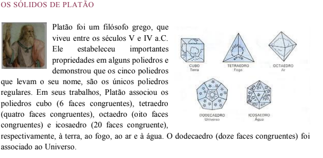
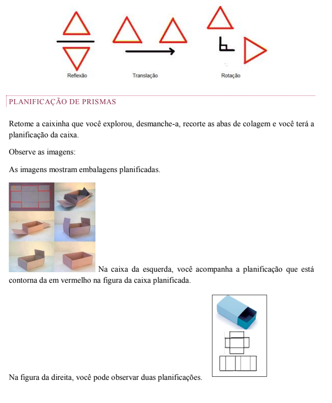
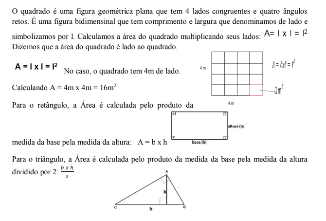
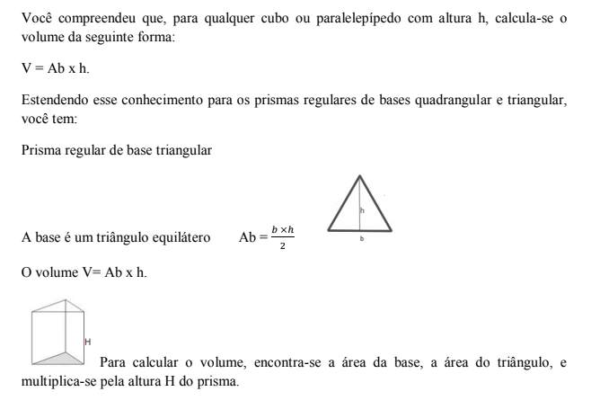
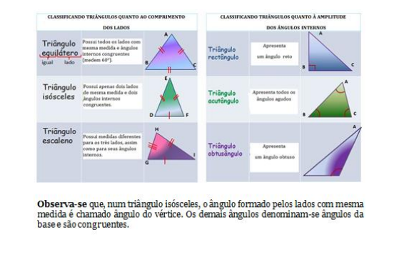

Capítulo 3
INDÚSTRIA CALÇADISTA
ContextualizandoAs operações que envolvem a fabricação de um calçado podem subir a mais de 380. Depois de cortada a parte superior, segundo um modelo (geralmente uma matriz), o calçado é levado à montagem onde são colocados o forro, biqueiras, contrafortes, cordões etc., utilizando- se a costura, amarração e adesivos. Outras operações se sucedem, como a perfuração, colocação de ilhoses, recortes, polimento etc. Nessa fase, o calçado é colocado numa forma (de madeira ou plástico), que reproduz a conformação do pé humano, determinando- se o estilo exato do calçado acabado. Faz-se então o encaixe dessa parte superior com a entressola, seguindo-se a operação de colocação da sola externa e outros elementos, como o salto (se necessário), viras etc., sendo então dado o acabamento final.
Os calçados se dividem em três grupos principais, dependendo do modo de como é feito o encaixe da parte superior com a entressola: a maior categoria inclui os que são ligados por adesivos (mais de 50% do total produzido); a segunda categoria inclui os sapatos ligados por costura; a última grande categoria é a dos sapatos vulcanizados. Começa a despontar como importante a classe de sapatos moldados por injeção de vinil.
Os calçados são fabricados segundo uma numeração que segue padrões determinados pelo gênero e faixa etária. Existe uma norma internacional para os tamanhos dos sapatos, no entanto, a verdade é que esse sistema de medida não foi internacionalmente aceito e os diversos países continuam a utilizar os seus sistemas tradicionais. Por isso, os fabricantes fornecem os sapatos de acordo com a escala de medida vigente no país do cliente.
Nas etapas da fabricação de calçados, desde a embalagem até a venda para o mercado interno ou para exportação, que grandezas e medidas são utilizadas e que conjunto numérico é mais utilizado?
Nas etapas da fabricação de calçados, desde a embalagem até a venda para o mercado interno ou para exportação, que grandezas e medidas são utilizadas e que conjunto numérico é mais utilizado?
(RE) CONSTRUINDO CONHECIMENTOSEm nosso cotidiano, em várias situações, nos deparamos com números “quebrados”, tanto quando medimos ou pesamos determinado objeto, quanto quando fazemos compras no supermercado e em diversas outras situações.
Observe alguns exemplos em nosso dia a dia em que usamos esses números:

Os números com vírgula que lemos no nosso dia a dia, são chamados números decimais e, em geral, têm uma fração decimal que lhe é correspondente.
A notação decimal é outra maneira de representar as frações.
Na notação que chamamos de decimal, a vírgula separa o número em duas partes: a parte inteira e a parte fracionária ou decimal. Observe o exemplo:

Parte inteira
Representação dos números decimais na reta numérica
Para representar os números decimais na reta numérica, precisamos dividir em 10 partes os intervalos entre dois números “inteiros”, determinando os décimos. Observe a reta a seguir:
O número 1,7 localiza-se entre os números inteiros 1 e 2, pois ele é maior do que 1 e menor do que 2. Subdividindo esse intervalo em dez partes do mesmo tamanho, tomando sete partes (sete décimos) temos, 1 + 0,7 = 1,7
Comparando números decimais
Para compararmos números decimais, devemos comparar casa a casa, da esquerda para a direita. Exemplo: 43,789 > 34,9999, pois 43 > 34, comparando a parte inteira do número.
8,6 > 8,37, pois 6 >3, como a parte inteira é igual, comparamos a primeira casa depois da vírgula e, assim, sucessivamente.
Para entender mais...
Os símbolos utilizados para comparar dois números são: >, <, ≥, ≤ . Observe a tabela a seguir e verifique como esses símbolos são lidos e como são empregados na comparação de números decimais.

Observe que o símbolo ≥ relaciona tanto quantidades iguais, como quantidades desiguais em que uma é maior do que a outra e o símbolo ≤ relaciona, tanto quantidades iguais como quantidades desiguais em que uma é menor do que a outra.
RELEMBRANDO A HISTÓRIAHoje em dia é comum o uso de frações. Houve tempo, porém que as frações não eram conhecidas. O homem introduziu o uso de frações quando começou a medir e representar medidas.
Os egípcios usavam apenas frações que representavam o número 1 dividido por um número inteiro, como por exemplo: 1/2, 1/3, 1/4, 1/5, etc. Tais frações eram denominadas frações egípcias e ainda hoje têm muitas aplicações práticas. Outras frações, expressas em termos de frações egípcias, como: 5/6=1/2+1/3, também foram descobertas pelos mesmos egípcios.
Os babilônios usavam em geral frações com denominador 60. É provável que o uso do número 60 pelos babilônios se deva ao fato de que é um número menor do que 100 com maior quantidade de divisores inteiros. Os romanos, por sua vez, usavam constantemente frações com denominador 12. Provavelmente os romanos usavam o número 12 por ser um número que embora pequeno, possui um número expressivo de divisores inteiros. Com o passar dos tempos, muitas notações foram usadas para representar frações até representações atuais.

Essa versão foi aprimorada por Napier que, em 1617, que propôs o uso de um ponto ou de uma vírgula para separar a parte inteira da parte decimal.
Os números decimais passaram a ser usados com mais ênfase após a criação do sistema métrico decimal.
A leitura de números decimais
Para ler números decimais é necessário, primeiramente, observar a localização da vírgula que separa a parte inteira da parte decimal. Um número decimal pode ser colocado na forma genérica:
Pode-se ler os números decimais indicando os inteiros maiores do que zero com a designação de inteiro seguido da leitura da parte decimal com a designação da última casa da direita ou lendo todo o número com a designação última casa da direita: Exemplos:

Os números decimais são muito utilizados em nosso dia a dia, quando lidamos com dinheiro e com o sistema de medidas. Desta forma, saber realizar cálculos com esses números é muito importante.
Operando com números decimaisVamos aprender a operar números decimais em problemas do dia a dia, relacionados ao Sistema Monetário Brasileiro.
Inicialmente, é importante entender um pouco de nosso sistema monetário.
Observe as moedas válidas hoje no Brasil e sua representação decimal.
Cédulas válidas hoje no Brasil:
 VOCÊ SABIA?
VOCÊ SABIA?
Adição e Subtração de números decimais

É importante destacar que, quando adicionamos ou subtraímos números decimais, devemos alinhar centena com centena, dezena com dezena, vírgula com vírgula, unidade com unidade, décimo com décimo, centésimo com centésimo e, assim por diante.

Multiplicação de números decimais
Multiplicação de um número decimal por um número natural
Na multiplicação de um número decimal por um número natural, o produto terá o mesmo número de casas decimais que o fator decimal. Exemplo:

Multiplicação de um número decimal por 10, 100 e 1000
Para multiplicar um número decimal por 10, 100, 1000, etc. basta deslocar a vírgula, para a direita, tantas casas quantos forem os zeros das potências de dez, completando as casas com zeros quando necessário. Exemplo:
 Multiplicação de um número decimal por um número decimal
Multiplicação de um número decimal por um número decimal
Quando multiplicamos um decimal por outro decimal a quantidade de casas decimais do produto é determinada pela soma da quantidade de casas decimais de cada fator. Observe o exemplo.

Divisão de números decimais por um número natural diferente de zero

Divisão de um número decimal por 10, 100 e 1000
 VAMOS PRATICAR?
VAMOS PRATICAR?
1) Represente com números decimais as quantias abaixo:

2) Some 0,1 a cada número indicado abaixo:
a) 2,2
b) 2,3
c) 1,25
d) 5,05
e) 5,6
f) 3,04
3) Observe a tabela a seguir e calcule o preço de cada compra.

a) 1 café + 1 sanduíche de queijo + 1 copo de leite
b) 1 suco de laranja + 1 bauru
c) 2 cafés com leite + 2 sanduiches de queijo
d) 1 chocolate quente + 1 bauru
e) 4 cafés
1) João tem R$ 84,30. Pedro tem R$ 31,50 a mais que João, e José tem R$ 54,25 a mais que Pedro. Quanto têm os três juntos?
2) A balança está em equilíbrio. Que número decimal devemos colocar no lugar da interrogação?

a) 5,237 . 10 =
b) 4,169 . 100 =
c) 8,63 . 1 000 =
d) 0,287 . 100 =
e) e1 000 . 0,9 =
f) 10 . 0,3 =
g) 1 000 . 5,4 =
h) 100 . 0,037 =
4) O dólar hoje custa R$ 3,18. Paulo quer comprar 35 dólares, quantos reais ele vai precisar?
5) Paulo comprou 20 laranjas. Se cada laranja custava R$ 0,48, quanto Paulo gastou?
6) Na tabela abaixo está representada a quantidade média de horas que se trabalha por semana em alguns países.

a) Em quais países se trabalha, em média, mais de 40 horas semanais?
b) Em quais países se trabalha, em média, menos de 40 horas semanais?
c) Qual o país onde se trabalha a maior quantidade de horas semanais?
d) Em que países a quantidade de horas trabalhadas é menor do que no Brasil?
e) Quanto tempo o Japão trabalha mais que o Brasil?
f) Quanto tempo os Estados Unidos trabalham mais que a França?
7) Paula comprou no supermercado, um pacote de farinha por R$ 1,59, duas dúzias de ovos por R$ 3,87 cada e um pacote de açúcar por R$ 2,31. Quanto ela gastou, ao todo, em suas compras?
O QUE APRENDI
Nesse capítulo aprendemos um pouco sobre os números decimais, tão necessários no dia a dia tanto para resolver situações com dinheiro que envolvem compra e venda, e em atividades que envolvem pesos e medidas. Aprendemos a operar com esses números e conhecemos um pouco de nosso sistema monetário e algumas moedas utilizadas em outros países.
Respostas dos exercícios da seção: Contextualizando... [Vamos praticar]
1. a) R$ 3,25 b) R$ 7,35 c) R$ 23,75
2. a) 2,3
b) 2,4
c) 1,35
d) 5,1
e) 5,7
f) 3,14
3. a) R$ 6,00
b) R$ 10,50
c) R$ 12,00
d) R$ 9,40
e) R$ 10,00